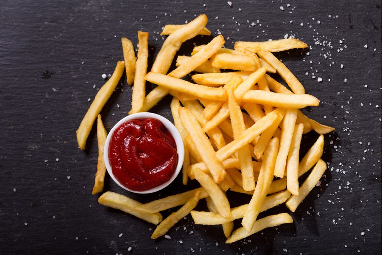

Papas fritas
Receta de papas dritas caseras

Ingredientes
- 3 o 4 papas (300gr)
- Aceite
- Sal
Elaboracion (Pasos)
- Pelar las papas
- Cortarlas en baston
- Calentar aceite en una sarten
- Cocinar hasta que esten doradas
- Removerlas del aceite y salar al gusto
________________________________